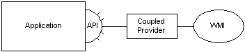

A WMI provider creates a group of supported classes, instances, and events to pass data to WMI. In turn, a management application or script can call provider methods to manipulate provider-supplied data.
The following diagram illustrates the relationship between a provider that is coupled to WMI and the application.

The following procedure describes how to create a simple provider that supports a set of instances. The provider described here is registered to run inside the WMI process. In some cases, use a decoupled provider that runs in a different process. For more information about provider hosting models, see Provider Hosting and Security. Steps 1 and 2 in the following procedure differ for decoupled providers but in other respects they use the same interfaces as in-process providers. For more information, see Incorporating a Provider in an Application.
To create an instance provider
Create an instance of a __Win32Provider class with Managed Object Format (MOF) code, providing the name and CLSID of the provider. For more information, see Designing Managed Object Format (MOF) Classes.
The following code example shows how to create an instance of a __Win32Provider class.
Instance of __Win32Provider as $P // $P is an alias
{
// Name that describes your provider
Name = "InstProvSamp" ;
ClsId = "{22CB8761-914A-11cf-B705-00AA0062CBB7}" ;
} ;
[!Note]
To ensure that all your WMI class definitions for managed objects are restored to the WMI repository if WMI has a failure and restarts, use the #pragma autorecover statement preprocessor instruction in your MOF file.
Â
For more information, see Creating an Instance and Registering an Instance Provider.
Create an instance of the __InstanceProviderRegistration class that describes the features of the instance provider.
The following code example shows how to create an instance of the __InstanceProviderRegistration class.
instance of __InstanceProviderRegistration
{
Provider = $P; // Alias to the __Win32Provider
SupportsPut = FALSE; // Does not support the Put method
SupportsGet = TRUE; // Supports the Get method
SupportsDelete = FALSE; // Does not support the Delete method
SupportsEnumeration = TRUE; // Supports enumeration.
};
For more information about the properties in this section of MOF code, see __InstanceProviderRegistration and __ObjectProviderRegistration.
For more information, see Registering an Instance Provider.
Use MOF code to create the dynamic class for which the provider supplies instances.
A dynamic class is a class whose instances receive updates from a provider. These updates can be regular or linked to sporadic changes in the objects the instances represent. You can view changes to the dynamic class instances through your own management application or the WMI Object Browser.
The following code example describes a dynamic class supported by the "InstProvSamp" provider.
[dynamic, provider("InstProvSamp"), // uses the InstProvSamp Provider
ClassContext("whatever!")] // information is dynamically
// supported by the provider
class InstProvSamp
{
[key]
// MyKey uniquely identifies this class
String MyKey="HELLO";
// InstProvSamp dynamically updates MyValue
[PropertyContext("Name")]
uint32 MyValue;
};
Register your classes with WMI through the MOF compiler.
From the command prompt in your provider directory, type the following to register the example MOF code with WMI.
mofcomp instprov.mof
For more information, see Compiling MOF Files.
Define a COM object to contain your provider. The example code for this step is located in a complete example at the end of this topic.
As with any COM object, you must implement a constructor and a deconstructor, as well as the QueryInterface, AddRef, and Release methods.
Implement the IWbemProviderInit::Initialize method in your COM object.
The main purpose of Initialize in this example is to set the m_pNamespace member to the current namespace. For more information about namespaces, see Creating Hierarchies Within WMI.
A sink is passed in through the pInitSink parameter in the IWbemProviderInit::Initialize method to state that the provider has successfully initialized. For more information about sinks, see IWbemObjectSink and Calling a Method.
Implement the IWbemServices::CreateInstanceEnumAsync method within your COM object (although you can implement a variety of IWbemServices interfaces, the example at the end of this topic implements only CreateInstanceEnumAsync). Specifically, CreateInstanceEnumAsync returns instances of specified objects to WMI.
Implement the GetObjectAsync method within your COM object.
In the example at the end of this topic, GetObjectAsync checks the parameters on the managed object, retrieves the specified object, performs error checking, and returns the appropriate codes to the sink.
Register your provider as a COM object, using RegSvr32.
From the command prompt in your provider directory, type the following:
regsvr32 InstProv.dll
Your provider is now complete. At this point, you should be able to access instances of the InstProvSamp class from within WMI.
The following code example creates a COM object to contain your provider as described in Step 5 above. The complete sample contains code from the header file titled Sample.h and source files titled Instprov.cpp, Utils.cpp, Classfac.cpp, and Maindll.cpp.
//*******************************************************************
// sample.h
// WMI Instance provider sample code
//
// Copyright (C) Microsoft. All Rights Reserved.
//
//*******************************************************************
#ifndef _sample_H_
#define _sample_H_
#include <wbemprov.h>
#pragma comment(lib, "wbemuuid.lib")
typedef LPVOID * PPVOID;
// Provider interfaces are provided by objects of this class
class CInstPro : public IWbemServices, public IWbemProviderInit
{
protected:
ULONG m_cRef; //Object reference count
IWbemServices* m_pNamespace;
public:
CInstPro(BSTR ObjectPath = NULL, BSTR User = NULL, BSTR Password = NULL, IWbemContext * pCtx=NULL);
~CInstPro(void);
//Non-delegating object IUnknown
STDMETHODIMP QueryInterface(REFIID, PPVOID);
STDMETHODIMP_(ULONG) AddRef(void);
STDMETHODIMP_(ULONG) Release(void);
//IWbemProviderInit
HRESULT STDMETHODCALLTYPE Initialize(
/* [in] */ LPWSTR pszUser,
/* [in] */ LONG lFlags,
/* [in] */ LPWSTR pszNamespace,
/* [in] */ LPWSTR pszLocale,
/* [in] */ IWbemServices *pNamespace,
/* [in] */ IWbemContext *pCtx,
/* [in] */ IWbemProviderInitSink *pInitSink
);
SCODE GetByPath( BSTR Path,
IWbemClassObject FAR* FAR* pObj,
IWbemContext *pCtx);
//IWbemServices
HRESULT STDMETHODCALLTYPE OpenNamespace(
/* [in] */ const BSTR Namespace,
/* [in] */ long lFlags,
/* [in] */ IWbemContext __RPC_FAR *pCtx,
/* [unique][in][out] */ IWbemServices __RPC_FAR *__RPC_FAR *ppWorkingNamespace,
/* [unique][in][out] */ IWbemCallResult __RPC_FAR *__RPC_FAR *ppResult)
{return WBEM_E_NOT_SUPPORTED;};
HRESULT STDMETHODCALLTYPE CancelAsyncCall(
/* [in] */ IWbemObjectSink __RPC_FAR *pSink)
{return WBEM_E_NOT_SUPPORTED;};
HRESULT STDMETHODCALLTYPE QueryObjectSink(
/* [in] */ long lFlags,
/* [out] */ IWbemObjectSink __RPC_FAR *__RPC_FAR *ppResponseHandler)
{return WBEM_E_NOT_SUPPORTED;};
HRESULT STDMETHODCALLTYPE GetObject(
/* [in] */ const BSTR ObjectPath,
/* [in] */ long lFlags,
/* [in] */ IWbemContext __RPC_FAR *pCtx,
/* [unique][in][out] */ IWbemClassObject __RPC_FAR *__RPC_FAR *ppObject,
/* [unique][in][out] */ IWbemCallResult __RPC_FAR *__RPC_FAR *ppCallResult)
{return WBEM_E_NOT_SUPPORTED;};
HRESULT STDMETHODCALLTYPE GetObjectAsync(
/* [in] */ const BSTR ObjectPath,
/* [in] */ long lFlags,
/* [in] */ IWbemContext __RPC_FAR *pCtx,
/* [in] */ IWbemObjectSink __RPC_FAR *pResponseHandler);
HRESULT STDMETHODCALLTYPE PutClass(
/* [in] */ IWbemClassObject __RPC_FAR *pObject,
/* [in] */ long lFlags,
/* [in] */ IWbemContext __RPC_FAR *pCtx,
/* [unique][in][out] */ IWbemCallResult __RPC_FAR *__RPC_FAR *ppCallResult)
{return WBEM_E_NOT_SUPPORTED;};
HRESULT STDMETHODCALLTYPE PutClassAsync(
/* [in] */ IWbemClassObject __RPC_FAR *pObject,
/* [in] */ long lFlags,
/* [in] */ IWbemContext __RPC_FAR *pCtx,
/* [in] */ IWbemObjectSink __RPC_FAR *pResponseHandler)
{return WBEM_E_NOT_SUPPORTED;};
HRESULT STDMETHODCALLTYPE DeleteClass(
/* [in] */ const BSTR Class,
/* [in] */ long lFlags,
/* [in] */ IWbemContext __RPC_FAR *pCtx,
/* [unique][in][out] */ IWbemCallResult __RPC_FAR *__RPC_FAR *ppCallResult)
{return WBEM_E_NOT_SUPPORTED;};
HRESULT STDMETHODCALLTYPE DeleteClassAsync(
/* [in] */ const BSTR Class,
/* [in] */ long lFlags,
/* [in] */ IWbemContext __RPC_FAR *pCtx,
/* [in] */ IWbemObjectSink __RPC_FAR *pResponseHandler)
{return WBEM_E_NOT_SUPPORTED;};
HRESULT STDMETHODCALLTYPE CreateClassEnum(
/* [in] */ const BSTR Superclass,
/* [in] */ long lFlags,
/* [in] */ IWbemContext __RPC_FAR *pCtx,
/* [out] */
IEnumWbemClassObject __RPC_FAR *__RPC_FAR *ppEnum)
{return WBEM_E_NOT_SUPPORTED;};
HRESULT STDMETHODCALLTYPE CreateClassEnumAsync(
/* [in] */ const BSTR Superclass,
/* [in] */ long lFlags,
/* [in] */ IWbemContext __RPC_FAR *pCtx,
/* [in] */ IWbemObjectSink __RPC_FAR *pResponseHandler)
{return WBEM_E_NOT_SUPPORTED;};
HRESULT STDMETHODCALLTYPE PutInstance(
/* [in] */ IWbemClassObject __RPC_FAR *pInst,
/* [in] */ long lFlags,
/* [in] */ IWbemContext __RPC_FAR *pCtx,
/* [unique][in][out] */ IWbemCallResult __RPC_FAR *__RPC_FAR *ppCallResult)
{return WBEM_E_NOT_SUPPORTED;};
HRESULT STDMETHODCALLTYPE PutInstanceAsync(
/* [in] */ IWbemClassObject __RPC_FAR *pInst,
/* [in] */ long lFlags,
/* [in] */ IWbemContext __RPC_FAR *pCtx,
/* [in] */ IWbemObjectSink __RPC_FAR *pResponseHandler)
{return WBEM_E_NOT_SUPPORTED;};
HRESULT STDMETHODCALLTYPE DeleteInstance(
/* [in] */ const BSTR ObjectPath,
/* [in] */ long lFlags,
/* [in] */ IWbemContext __RPC_FAR *pCtx,
/* [unique][in][out] */ IWbemCallResult __RPC_FAR *__RPC_FAR *ppCallResult)
{return WBEM_E_NOT_SUPPORTED;};
HRESULT STDMETHODCALLTYPE DeleteInstanceAsync(
/* [in] */ const BSTR ObjectPath,
/* [in] */ long lFlags,
/* [in] */ IWbemContext __RPC_FAR *pCtx,
/* [in] */ IWbemObjectSink __RPC_FAR *pResponseHandler)
{return WBEM_E_NOT_SUPPORTED;};
HRESULT STDMETHODCALLTYPE CreateInstanceEnum(
/* [in] */ const BSTR Class,
/* [in] */ long lFlags,
/* [in] */ IWbemContext __RPC_FAR *pCtx,
/* [out] */ IEnumWbemClassObject __RPC_FAR *__RPC_FAR *ppEnum)
{return WBEM_E_NOT_SUPPORTED;};
HRESULT STDMETHODCALLTYPE CreateInstanceEnumAsync(
/* [in] */ const BSTR Class,
/* [in] */ long lFlags,
/* [in] */ IWbemContext __RPC_FAR *pCtx,
/* [in] */ IWbemObjectSink __RPC_FAR *pResponseHandler);
HRESULT STDMETHODCALLTYPE ExecQuery(
/* [in] */ const BSTR QueryLanguage,
/* [in] */ const BSTR Query,
/* [in] */ long lFlags,
/* [in] */ IWbemContext __RPC_FAR *pCtx,
/* [out] */ IEnumWbemClassObject __RPC_FAR *__RPC_FAR *ppEnum)
{return WBEM_E_NOT_SUPPORTED;};
HRESULT STDMETHODCALLTYPE ExecQueryAsync(
/* [in] */ const BSTR QueryLanguage,
/* [in] */ const BSTR Query,
/* [in] */ long lFlags,
/* [in] */ IWbemContext __RPC_FAR *pCtx,
/* [in] */ IWbemObjectSink __RPC_FAR *pResponseHandler)
{return WBEM_E_NOT_SUPPORTED;};
HRESULT STDMETHODCALLTYPE ExecNotificationQuery(
/* [in] */ const BSTR QueryLanguage,
/* [in] */ const BSTR Query,
/* [in] */ long lFlags,
/* [in] */ IWbemContext __RPC_FAR *pCtx,
/* [out] */ IEnumWbemClassObject __RPC_FAR *__RPC_FAR *ppEnum)
{return WBEM_E_NOT_SUPPORTED;};
HRESULT STDMETHODCALLTYPE ExecNotificationQueryAsync(
/* [in] */ const BSTR QueryLanguage,
/* [in] */ const BSTR Query,
/* [in] */ long lFlags,
/* [in] */ IWbemContext __RPC_FAR *pCtx,
/* [in] */ IWbemObjectSink __RPC_FAR *pResponseHandler)
{return WBEM_E_NOT_SUPPORTED;};
HRESULT STDMETHODCALLTYPE ExecMethod( const BSTR,
const BSTR,
long,
IWbemContext*,
IWbemClassObject*,
IWbemClassObject**,
IWbemCallResult**)
{return WBEM_E_NOT_SUPPORTED;}
HRESULT STDMETHODCALLTYPE ExecMethodAsync( const BSTR,
const BSTR,
long,
IWbemContext*,
IWbemClassObject*,
IWbemObjectSink*)
{return WBEM_E_NOT_SUPPORTED;}
};
typedef CInstPro *PCInstPro;
// This class is the class factory for CInstPro objects.
class CProvFactory : public IClassFactory
{
protected:
ULONG m_cRef;
public:
CProvFactory(void);
~CProvFactory(void);
//IUnknown members
STDMETHODIMP QueryInterface(REFIID, PPVOID);
STDMETHODIMP_(ULONG) AddRef(void);
STDMETHODIMP_(ULONG) Release(void);
//IClassFactory members
STDMETHODIMP CreateInstance(LPUNKNOWN, REFIID, PPVOID);
STDMETHODIMP LockServer(BOOL);
};
typedef CProvFactory *PCProvFactory;
// These variables keep track of
// when the module can be unloaded
extern long g_cObj;
extern long g_cLock;
// General purpose utilities.
DWORD GetCurrentImpersonationLevel ();
SCODE CreateInst( IWbemServices * pNamespace,
LPWSTR pKey, long lVal,
IWbemClassObject ** pNewInst,
WCHAR * pwcClassName,
IWbemContext *pCtx);
typedef struct {
WCHAR * pwcKey;
long lValue;
} InstDef;
extern InstDef MyDefs[];
extern long glNumInst;
#endif
The Instpro.cpp source file contains code that implements the functions for the provider declared in the Sample.h header file.
//*******************************************************************
// INSTPRO.CPP
//
// Module: WMI Instance provider sample code
//
// Purpose: Defines the CInstPro class. An object of this class is
// created by the class factory for each connection.
// Copyright (C) Microsoft. All Rights Reserved.
//
//*******************************************************************
#define _WIN32_WINNT 0x0500
#include <objbase.h>
#include "sample.h"
#include <process.h>
#include <strsafe.h>
#include <sddl.h>
InstDef MyDefs[] = {{L"a", 1}, {L"b", 2}, {L"c", 3}};
long glNumInst = sizeof(MyDefs)/sizeof(InstDef);
//*******************************************************************
//
// CInstPro::CInstPro
// CInstPro::~CInstPro
//
//*******************************************************************
CInstPro::CInstPro(BSTR ObjectPath,
BSTR User,
BSTR Password,
IWbemContext * pCtx)
{
m_pNamespace = NULL;
m_cRef=0;
InterlockedIncrement(&g_cObj);
return;
}
CInstPro::~CInstPro(void)
{
if(m_pNamespace)
m_pNamespace->Release();
InterlockedDecrement(&g_cObj);
return;
}
//*******************************************************************
//
// CInstPro::QueryInterface
// CInstPro::AddRef
// CInstPro::Release
//
// Purpose: IUnknown members for CInstPro object.
//*******************************************************************
STDMETHODIMP CInstPro::QueryInterface(REFIID riid, PPVOID ppv)
{
*ppv=NULL;
// Because you have dual inheritance,
// it is necessary to cast the return type
if(riid== IID_IWbemServices)
*ppv=(IWbemServices*)this;
if(IID_IUnknown==riid || riid== IID_IWbemProviderInit)
*ppv=(IWbemProviderInit*)this;
if (NULL!=*ppv)
{
AddRef();
return NOERROR;
}
else
return E_NOINTERFACE;
}
STDMETHODIMP_(ULONG) CInstPro::AddRef(void)
{
return ++m_cRef;
}
STDMETHODIMP_(ULONG) CInstPro::Release(void)
{
ULONG nNewCount = InterlockedDecrement((long *)&m_cRef);
if (0L == nNewCount)
delete this;
return nNewCount;
}
/********************************************************************
*
* CInstPro::Initialize
*
* Purpose: This is the implementation of IWbemProviderInit.
* The method is required to initialize with CIMOM.
*
********************************************************************/
STDMETHODIMP CInstPro::Initialize(LPWSTR pszUser,
LONG lFlags,
LPWSTR pszNamespace,
LPWSTR pszLocale,
IWbemServices *pNamespace,
IWbemContext *pCtx,
IWbemProviderInitSink *pInitSink)
{
if(! pNamespace)
{
pInitSink->SetStatus(WBEM_E_FAILED , 0);
}
else
{
m_pNamespace = pNamespace;
m_pNamespace->AddRef();
pInitSink->SetStatus(WBEM_S_INITIALIZED, 0);
}
return WBEM_S_NO_ERROR;
}
//*******************************************************************
//
// CInstPro::CreateInstanceEnumAsync
//
// Purpose: Asynchronously enumerates the instances.
//
//*******************************************************************
SCODE CInstPro::CreateInstanceEnumAsync( const BSTR RefStr,
long lFlags,
IWbemContext *pCtx,
IWbemObjectSink FAR* pHandler)
{
//Impersonate the client
HRESULT hr = CoImpersonateClient () ;
if ( FAILED ( hr ) )
{
pHandler->SetStatus ( 0 , hr , NULL , NULL ) ;
return hr ;
}
// Check to see if call is at lower than
// RPC_C_IMP_LEVEL_IMPERSONATE level. If that is the case,
// the provider will not be able to impersonate
// the client to access the protected resources.
DWORD t_CurrentImpersonationLevel =
GetCurrentImpersonationLevel () ;
if ( t_CurrentImpersonationLevel < RPC_C_IMP_LEVEL_IMPERSONATE )
{
// Revert before you perform any operations
CoRevertToSelf () ;
hr = WBEM_E_ACCESS_DENIED;
pHandler->SetStatus ( 0 , hr , NULL , NULL ) ;
return hr ;
}
SCODE sc;
int iCnt;
IWbemClassObject FAR* pNewInst;
// Do a check of arguments and ensure
// you have a pointer to Namespace
if(pHandler == NULL || m_pNamespace == NULL)
return WBEM_E_INVALID_PARAMETER;
for(iCnt=0; iCnt < glNumInst; iCnt++)
{
sc = CreateInst(m_pNamespace,MyDefs[iCnt].pwcKey, MyDefs[iCnt].lValue, &pNewInst, RefStr, pCtx);
if(sc != S_OK)
break;
// Send the object to the caller
pHandler->Indicate(1,&pNewInst);
pNewInst->Release();
}
// Set status
pHandler->SetStatus(0,sc,NULL, NULL);
return sc;
}
//*******************************************************************
//
// CInstPro::GetObjectByPath
// CInstPro::GetObjectByPathAsync
//
// Purpose: Creates an instance given a particular path value.
//
//*******************************************************************
SCODE CInstPro::GetObjectAsync(const BSTR ObjectPath,
long lFlags,
IWbemContext *pCtx,
IWbemObjectSink FAR* pHandler)
{
//Impersonate the client
HRESULT hr = CoImpersonateClient () ;
if ( FAILED ( hr ) )
{
pHandler->SetStatus ( 0 , hr , NULL , NULL ) ;
return hr ;
}
// Check to see if call is at the
// RPC_C_IMP_LEVEL_IDENTIFY level. If that is the case,
// the provider will not be able to impersonate
// the client to access the protected resources.
if (GetCurrentImpersonationLevel () == RPC_C_IMP_LEVEL_IDENTIFY)
{
hr = WBEM_E_ACCESS_DENIED;
pHandler->SetStatus ( 0 , hr , NULL , NULL ) ;
return hr ;
}
SCODE sc;
IWbemClassObject FAR* pObj;
BOOL bOK = FALSE;
// Do a check of arguments and ensure
// you have a pointer to Namespace
if(ObjectPath == NULL ||
pHandler == NULL ||
m_pNamespace == NULL)
return WBEM_E_INVALID_PARAMETER;
// do the get, pass the object on to the notify
sc = GetByPath(ObjectPath,&pObj, pCtx);
if(sc == S_OK)
{
pHandler->Indicate(1,&pObj);
pObj->Release();
bOK = TRUE;
}
sc = (bOK) ? S_OK : WBEM_E_NOT_FOUND;
// Set Status
pHandler->SetStatus(0,sc, NULL, NULL);
return sc;
}
//*******************************************************************
//
// CInstPro::GetByPath
//
// Purpose: Creates an instance given a particular Path value.
//
//*******************************************************************
SCODE CInstPro::GetByPath(BSTR ObjectPath,
IWbemClassObject FAR* FAR* ppObj,
IWbemContext *pCtx)
{
SCODE sc = S_OK;
int iCnt;
// Do a simple path parse. The path looks like
// InstProvSamp.MyKey="a"
// Create a test string with just the part between quotes.
WCHAR wcTest[MAX_PATH+1];
memset(wcTest, NULL, sizeof(wcTest));
StringCbCopyW(wcTest, sizeof(wcTest), ObjectPath);
WCHAR * pwcTest, * pwcCompare = NULL;
int iNumQuotes = 0;
for(pwcTest = wcTest; *pwcTest; pwcTest++)
if(*pwcTest == L'\"')
{
iNumQuotes++;
if(iNumQuotes == 1)
{
pwcCompare = pwcTest+1;
}
else if(iNumQuotes == 2)
{
*pwcTest = NULL;
break;
}
}
else if(*pwcTest == L'.')
*pwcTest = NULL; // isolate the class name.
if(iNumQuotes != 2)
return WBEM_E_FAILED;
// check the instance list for a match.
for(iCnt = 0; iCnt < glNumInst; iCnt++)
{
if(!_wcsicmp(MyDefs[iCnt].pwcKey, pwcCompare))
{
sc = CreateInst(m_pNamespace,MyDefs[iCnt].pwcKey, MyDefs[iCnt].lValue, ppObj, wcTest, pCtx);
return sc;
}
}
return WBEM_E_NOT_FOUND;
}
The Utils.cpp source file contains code that implements the utility functions for the provider declared in the Sample.h header file.
//*******************************************************************
// UTILS.CPP
// Module: WMI Instance provider sample code
// Purpose: General purpose utilities.
// (c) Microsoft. All rights reserved.
//
//*******************************************************************
#include <objbase.h>
#include "sample.h"
//*******************************************************************
//
// CreateInst
//
// Purpose: Creates a new instance and sets
// the initial values of the properties.
//
// Return: S_OK if all is well, otherwise an error code is returned
//
//*******************************************************************
SCODE CreateInst(IWbemServices * pNamespace,
LPWSTR pKey,
long lVal,
IWbemClassObject ** pNewInst,
WCHAR * pwcClassName,
IWbemContext *pCtx)
{
SCODE sc;
IWbemClassObject * pClass = NULL;
sc = pNamespace->GetObject(pwcClassName, 0, pCtx, &pClass, NULL);
if(sc != S_OK)
return WBEM_E_FAILED;
sc = pClass->SpawnInstance(0, pNewInst);
pClass->Release();
if(FAILED(sc))
return sc;
VARIANT v;
// Set the key property value.
v.vt = VT_BSTR;
v.bstrVal = SysAllocString(pKey);
if (!v.bstrVal)
return WBEM_E_OUT_OF_MEMORY;
sc = (*pNewInst)->Put(L"MyKey", 0, &v, 0);
VariantClear(&v);
if(FAILED(sc))
return sc;
// Set the number property value.
v.vt = VT_I4;
v.lVal = lVal;
sc = (*pNewInst)->Put(L"MyValue", 0, &v, 0);
return sc;
}
/********************************************************************
*
* Name: GetCurrentImpersonationLevel
* Description: Get COM impersonation level of caller.
*
*******************************************************************/
DWORD GetCurrentImpersonationLevel ()
{
DWORD t_ImpersonationLevel = RPC_C_IMP_LEVEL_ANONYMOUS ;
HANDLE t_ThreadToken = NULL ;
BOOL t_Status = OpenThreadToken(GetCurrentThread(),TOKEN_QUERY,TRUE,&t_ThreadToken);
if ( t_Status )
{
SECURITY_IMPERSONATION_LEVEL t_Level = SecurityAnonymous ;
DWORD t_Returned = 0 ;
t_Status = GetTokenInformation( t_ThreadToken,
TokenImpersonationLevel,
&t_Level,
sizeof(SECURITY_IMPERSONATION_LEVEL),
&t_Returned);
CloseHandle ( t_ThreadToken ) ;
if ( t_Status == FALSE )
{
t_ImpersonationLevel = RPC_C_IMP_LEVEL_ANONYMOUS ;
}
else
{
switch ( t_Level )
{
case SecurityAnonymous:
{
t_ImpersonationLevel = RPC_C_IMP_LEVEL_ANONYMOUS;
}
break;
case SecurityIdentification:
{
t_ImpersonationLevel = RPC_C_IMP_LEVEL_IDENTIFY;
}
break ;
case SecurityImpersonation:
{
t_ImpersonationLevel = RPC_C_IMP_LEVEL_IMPERSONATE;
}
break ;
case SecurityDelegation:
{
t_ImpersonationLevel = RPC_C_IMP_LEVEL_DELEGATE ;
}
break ;
default:
{
t_ImpersonationLevel = RPC_C_IMP_LEVEL_ANONYMOUS ;
}
break ;
}
}
}
else
{
ULONG t_LastError = GetLastError () ;
if ( t_LastError == ERROR_NO_IMPERSONATION_TOKEN ||
t_LastError == ERROR_NO_TOKEN )
{
t_ImpersonationLevel = RPC_C_IMP_LEVEL_DELEGATE ;
}
else
{
if ( t_LastError == ERROR_CANT_OPEN_ANONYMOUS )
{
t_ImpersonationLevel = RPC_C_IMP_LEVEL_ANONYMOUS ;
}
else
{
t_ImpersonationLevel = RPC_C_IMP_LEVEL_ANONYMOUS ;
}
}
}
return t_ImpersonationLevel ;
}
The Classfac.cpp source file contains code that creates objects when connections are requested.
//*******************************************************************
//
// CLASSFAC.CPP
// Module: WMI Instance provider sample code
// Purpose: Contains the class factory. This creates objects when
// connections are requested.
// Copyright (C) Microsoft. All Rights Reserved.
//
//*******************************************************************
#include <objbase.h>
#include "sample.h"
//*******************************************************************
//
// CProvFactory::CProvFactory
// CProvFactory::~CProvFactory
//
// Constructor Parameters:
// None
//*******************************************************************
CProvFactory::CProvFactory()
{
m_cRef=0L;
return;
}
CProvFactory::~CProvFactory(void)
{
return;
}
//*******************************************************************
//
// CProvFactory::QueryInterface
// CProvFactory::AddRef
// CProvFactory::Release
//
// Purpose: Standard Ole routines needed for all interfaces
//
//*******************************************************************
STDMETHODIMP CProvFactory::QueryInterface(REFIID riid, PPVOID ppv)
{
*ppv=NULL;
if (IID_IUnknown==riid || IID_IClassFactory==riid)
*ppv=this;
if (NULL!=*ppv)
{
((LPUNKNOWN)*ppv)->AddRef();
return NOERROR;
}
return E_NOINTERFACE;
}
STDMETHODIMP_(ULONG) CProvFactory::AddRef(void)
{
return ++m_cRef;
}
STDMETHODIMP_(ULONG) CProvFactory::Release(void)
{
ULONG nNewCount = InterlockedDecrement((long *)&m_cRef);
if (0L == nNewCount)
delete this;
return nNewCount;
}
//*******************************************************************
//
// CProvFactory::CreateInstance
//
// Purpose: Instantiates a Locator object
// and returns an interface pointer.
//
// Parameters:
// pUnkOuter LPUNKNOWN to the controlling IUnknown if
// being used in an aggregation.
// riid REFIID identifies the interface the caller
// desires to have for the new object.
// ppvObj PPVOID in which to store the desired
// interface pointer for the new object.
//
// Return Value:
// HRESULT NOERROR if successful, otherwise E_NOINTERFACE
// if you cannot support the requested interface.
//*******************************************************************
STDMETHODIMP CProvFactory::CreateInstance(LPUNKNOWN pUnkOuter, REFIID riid, PPVOID ppvObj)
{
CInstPro * pObj;
HRESULT hr;
*ppvObj=NULL;
// This object does not support aggregation.
if (NULL!=pUnkOuter)
return CLASS_E_NOAGGREGATION;
// Create the locator object.
pObj=new CInstPro();
if (NULL==pObj)
return E_OUTOFMEMORY;
hr=pObj->QueryInterface(riid, ppvObj);
//Kill the object if initial creation or Init failed.
if (FAILED(hr))
delete pObj;
return hr;
}
//*******************************************************************
//
// CProvFactory::LockServer
//
// Purpose:
// Increments or decrements the lock count of the DLL. If the
// lock count goes to zero and there are no objects, the DLL
// is allowed to unload. See DllCanUnloadNow.
//
// Parameters:
// fLock BOOL specifying whether to increment or
// decrement the lock count.
//
// Return Value:
// HRESULT NOERROR always.
//*******************************************************************
STDMETHODIMP CProvFactory::LockServer(BOOL fLock)
{
if (fLock)
InterlockedIncrement(&g_cLock);
else
InterlockedDecrement(&g_cLock);
return NOERROR;
}
The Maindll.cpp source file contains code that controls when the DLL can be unloaded by tracking the number of objects and locks, as well as routines that support self registration.
//*******************************************************************
// MAINDLL.CPP
// Module: WMI Instance provider sample code
// Purpose: Contains DLL entry points. Also has code that controls
// when the DLL can be unloaded by tracking the number of
// objects and locks as well as routines that support
// self registration.
//
// Copyright (C) Microsoft. All Rights Reserved.
//
//*******************************************************************
#include <objbase.h>
#include <initguid.h>
#include <strsafe.h>
#include "sample.h"
HMODULE ghModule;
// TODO, GuidGen should be used to generate a unique number for any
// providers that are going to be used for anything more extensive
// than just testing.
DEFINE_GUID(CLSID_instprovider, 0x22cb8761, 0x914a, 0x11cf, 0xb7, 0x5, 0x0, 0xaa, 0x0, 0x62, 0xcb, 0xb7);
// {22CB8761-914A-11cf-B705-00AA0062CBB7}
//Count number of objects and number of locks.
long g_cObj=0;
long g_cLock=0;
//*******************************************************************
//
// LibMain32
//
// Purpose: Entry point for DLL.
//
// Return: TRUE if OK.
//
//*******************************************************************
BOOL WINAPI LibMain32(HINSTANCE hInstance, ULONG ulReason, LPVOID pvReserved)
{
if (DLL_PROCESS_ATTACH==ulReason)
ghModule = hInstance;
return TRUE;
}
//*******************************************************************
//
// DllGetClassObject
//
// Purpose: Called by Ole when some client wants a class factory.
// Return one only if it is the sort of
// class this DLL supports.
//
//*******************************************************************
STDAPI DllGetClassObject(REFCLSID rclsid, REFIID riid, PPVOID ppv)
{
HRESULT hr;
CProvFactory *pObj;
if (CLSID_instprovider!=rclsid)
return E_FAIL;
pObj=new CProvFactory();
if (NULL==pObj)
return E_OUTOFMEMORY;
hr=pObj->QueryInterface(riid, ppv);
if (FAILED(hr))
delete pObj;
return hr;
}
//*******************************************************************
//
// DllCanUnloadNow
//
// Purpose: Called periodically by Ole to determine if the
// DLL can be freed.
//
// Return: S_OK if there are no objects in use and the class factory
// is not locked.
//
//*******************************************************************
STDAPI DllCanUnloadNow(void)
{
SCODE sc;
//It is OK to unload if there are no objects or locks on the
// class factory.
sc=(0L==g_cObj && 0L==g_cLock) ? S_OK : S_FALSE;
return sc;
}
//*******************************************************************
//
// DllRegisterServer
//
// Purpose: Called during setup or by regsvr32.
//
// Return: NOERROR if registration successful, error otherwise.
//*******************************************************************
STDAPI DllRegisterServer(void)
{
char szID[128];
WCHAR wcID[128];
char szCLSID[128];
TCHAR szModule[MAX_PATH + 1];
const char * pName = "WMI Sample Instance Provider";
const char * pModel = "Both";
HKEY hKey1, hKey2;
// Create the path.
memset(wcID, NULL, sizeof(wcID));
memset(szID, NULL, sizeof(szID));
StringFromGUID2(CLSID_instprovider, wcID, sizeof(wcID)/sizeof(WCHAR));
wcstombs(szID, wcID, sizeof(szID));
StringCbCopy(szCLSID, sizeof(szCLSID), "Software\\classes\\CLSID\\");
StringCbCat(szCLSID, sizeof(szCLSID), (LPCTSTR)szID);
// Create entries under CLSID
LONG lRet = RegCreateKeyEx( HKEY_LOCAL_MACHINE,
szCLSID,
0,
NULL,
REG_OPTION_NON_VOLATILE,
KEY_WRITE,
NULL,
&hKey1,
NULL );
if (lRet != ERROR_SUCCESS)
{
return E_FAIL;
}
lRet = RegSetValueEx(hKey1, NULL, 0, REG_SZ, (BYTE *)pName, strlen(pName)+1);
if (lRet != ERROR_SUCCESS)
{
RegCloseKey(hKey1);
return E_FAIL;
}
lRet = RegCreateKeyEx( hKey1, "InprocServer32", 0, NULL, REG_OPTION_NON_VOLATILE, KEY_WRITE, NULL, &hKey2, NULL );
if (lRet != ERROR_SUCCESS)
{
RegCloseKey(hKey1);
return E_FAIL;
}
memset(&szModule, NULL, sizeof(szModule));
GetModuleFileName(ghModule, szModule, sizeof(szModule)/sizeof(TCHAR) - 1);
lRet = RegSetValueEx(hKey2, NULL, 0, REG_SZ, (BYTE *)szModule, strlen(szModule)+1);
if (lRet != ERROR_SUCCESS)
{
RegCloseKey(hKey2);
RegCloseKey(hKey1);
return E_FAIL;
}
lRet = RegSetValueEx(hKey2, "ThreadingModel", 0, REG_SZ, (BYTE *)pModel, strlen(pModel)+1);
if (lRet != ERROR_SUCCESS)
{
RegCloseKey(hKey2);
RegCloseKey(hKey1);
return E_FAIL;
}
RegCloseKey(hKey1);
RegCloseKey(hKey2);
return NOERROR;
}
//*******************************************************************
//
// DllUnregisterServer
//
// Purpose: Called when it is time to remove the registry entries.
//
// Return: NOERROR if registration successful, error otherwise.
//*******************************************************************
STDAPI DllUnregisterServer(void)
{
TCHAR szID[128];
WCHAR wcID[128];
TCHAR szCLSID[128];
HKEY hKey;
// Create the path using the CLSID
memset(wcID, NULL, sizeof(wcID));
memset(szID, NULL, sizeof(szID));
StringFromGUID2(CLSID_instprovider, wcID, sizeof(wcID)/sizeof(WCHAR));
wcstombs(szID, wcID, sizeof(szID));
StringCbCopy(szCLSID, sizeof(szCLSID), "Software\\classes\\CLSID\\");
StringCbCat(szCLSID, sizeof(szCLSID), (LPCTSTR)szID);
// First delete the InProcServer subkey.
DWORD dwRet = RegOpenKeyEx(HKEY_LOCAL_MACHINE, szCLSID, 0, KEY_WRITE, &hKey);
if(dwRet == NO_ERROR)
{
RegDeleteKey(hKey, "InProcServer32");
RegCloseKey(hKey);
}
dwRet = RegOpenKeyEx(HKEY_LOCAL_MACHINE, "Software\\classes\\CLSID", 0, KEY_WRITE, &hKey);
if(dwRet == NO_ERROR)
{
RegDeleteKey(hKey,szID);
RegCloseKey(hKey);
}
return NOERROR;
}
Setting Namepace Security Descriptors
Â
Â